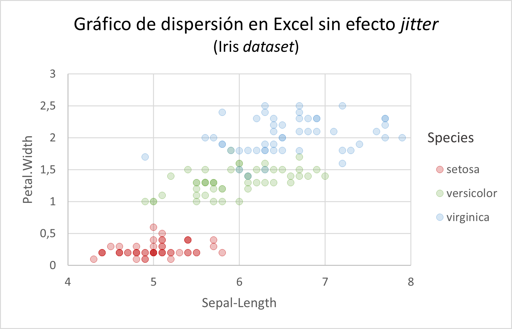
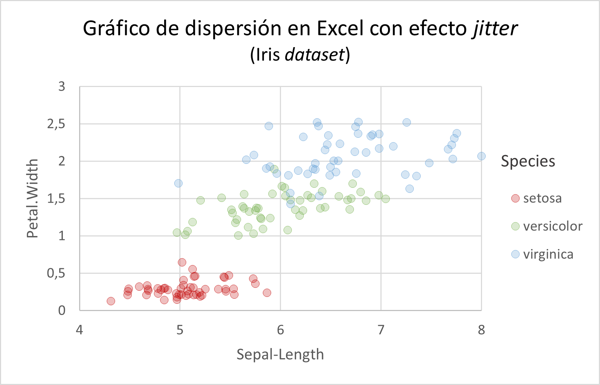

library (ggplot2)
ggplot (iris, aes(x = Sepal.Length, y = Petal.Width, colour = Species)) +
geom_point() +
theme_minimal()
Excel llama gráfico de dispersión o gráfico XY al que tiene un eje X numérico que representa valores y no categorías. En contraposición, un gráfico de líneas muestra el eje X como categorías, en la secuencia en la que aparecen los valores en la hoja de cálculo, sin importar la magnitud de su valor.
Según indica Microsoft en su página de soporte sobre estos gráficos en Excel,
Los gráficos de dispersión se usan normalmente para mostrar y comparar valores numéricos, como datos científicos, estadísticos e ingeniería. Estos gráficos son útiles para mostrar las relaciones entre los valores numéricos de varias series de datos y pueden trazar dos grupos de números como una serie de coordenadas xy.
Los gráficos de líneas pueden mostrar datos continuos a lo largo del tiempo, establecerse en una escala común y, por lo tanto, son ideales para mostrar tendencias de datos a intervalos iguales o a lo largo del tiempo. En un gráfico de líneas, los datos de categoría se distribuyen de forma uniforme a lo largo del eje horizontal y todos los datos de valores se distribuyen de forma uniforme en el eje vertical.
Como regla general, use un gráfico de líneas si los datos tienen valores x no numéricos: para los valores x numéricos, normalmente es mejor usar un gráfico de dispersión.
Excel tiene la opción de hacer gráficos de dispersión para dos variables, que deben estar en dos columnas. Una de las cosas que siempre he echado de menos en este programa, y que es muy fácil en R o python, es la posibilidad de hacer gráficos de dispersión multiserie, segmentados por una columna adicional que se utiliza para codificar en color de acuerdo con los valores de esa columna. Con ggplot en R, es inmediato utilizar colour para las categorías:
library (ggplot2)
ggplot (iris, aes(x = Sepal.Length, y = Petal.Width, colour = Species)) +
geom_point() +
theme_minimal()
Si queremos evitar el solapamiento de puntos en los valores repetidos, podemos usar la geometría geom_jitter():
library (ggplot2)
ggplot (iris, aes(x = Sepal.Length, y = Petal.Width, colour = Species)) +
geom_jitter(size = 3, alpha = 0.3, stroke = 1) +
theme_minimal()
El inconveniente de este gráfico en Excel es que para asignar diferentes colores a las series, Excel necesita que las series estén separadas en diferentes columnas. Esto es debido probablemente a que el diseño de Excel es muy anterior a los conceptos modernos de datos arreglados (tidy data) y a los modernos programas de análisis de datos como R, python, o incluso el propio Power BI de Microsoft.
He encontrado algunas soluciones creativas a este problema, entre ellas la de Vidya en su blog Daydreaming Numbers. La solución que ella propone es la creación de las columnas necesarias con los campos de clasificación, y mediante fórmulas condicionales, recolocar los valores en estas nuevas columnas. Sin embargo, aunque la solución funciona, no cumple con mi requerimiento de respetar el formato de datos arreglados (tidy), y no es compatible con el uso avanzado de tablas en Excel y en Power Pilot / Power BI.
La solución que yo estoy buscando debe llegar a través de métodos que no alteren la estructura de los datos originales, y sean compatibles con las nuevas herramientas como Power Pivot, Power BI, o lenguajes como R o python. Esto exige no modificar la tabla de datos original, o en todo caso, hacerlo respetando los datos y la estructura originales.
El método que he elegido es utilizar las tablas dinámicas. Desgraciadamente (e inexplicablemente), las tablas dinámicas no permiten la utilización de gráficos de dispersión dinámicos, por lo que los usuarios han buscado formas alternativas de crearlos. La que vamos a utilizar aquí es la creación de un gráfico de dispersión a partir de la asignación manual de los rangos de datos de la tabla dinámica.
Utilizaremos el dataset iris(Conjunto de datos Iris en Wikipedia, Conjunto de datos Iris en kaggle), exportado desde R como CSV, que convertimos en una tabla de Excel mediante Menu>Insertar>Tabla

Queremos hacer un gráfico de dispersión de la columna Sepal.Length frente a Petal.Width, agrupada por Species, igual que hemos visto en el gráfico hecho con ggplot.
Comenzamos insertando una tabla dinámica a partir de esta tabla, y colocamosSpeciesen columnas,Sepal.Lengthen filas yPetal.Widthen valores.
Vamos a introducir algunas opciones de diseño de la tabla dinámica que nos facilitan el trabajo de construcción del gráfico. Haciendo click derecho en cualquier parte de la tabla, seleccionamos Opciones de la tabla dinámica. En la pestaña Diseño y formato, deseleccionamos la opción Autoajustar anchos de columnas al actualizar(de forma que quitemos la marca de check). En la pestaña Totales y filtros, deseleccionamos las dos opciones de Totales generales, de manera que quitemos la marca de Mostrar totales generales de filasy de Mostrar totales generales de las columnas.
Excel siempre utiliza fórmulas de agrupación en los campos de valores, y por defecto utiliza Recuento. La fórmula de Recuento nos permite ver que hay algunas parejas de valores que están repetidas, por ejemplo, hay 8 valores de Petal.Widthque coinciden con un valor de 5 en Sepal.Length y que la tabla dinámica ha agrupado. Esto es un inconveniente porque en un gráfico de dispersión queremos que nos aparezcan todos los pares de valores sin agrupar, para que la nube de puntos represente el total de los datos.
Por el momento vamos a explorar hasta dónde nos permite llegar la tabla dinámica con sus opciones de formato ordinarias. Para representar valores de Petal.Width, reemplazamos la fórmula de Recuentopor la de Promedio. Para ello hacemos click-derecho sobre uno de los campos de valor en la tabla, y seleccionamos Resumir valores... y a continuación, Promedio.

Esta tabla ya nos permite representar pares de valores. Como hemos visto, si intentamos insertar un gráfico dinámico XY, Excel nos devuelve un mensaje advirtiendo que no es posible presentar este gráfico.

El único gráfico de puntos que podríamos insertar como gráfico dinámico es un gráfico de líneas y puntos al que podemos borrar las líneas de forma que sólo queden los puntos, Pero este gráfico no es el que buscamos, porque presenta los valores X siguiendo la secuencia que tienen los números en la fila de la tabla dinámica, y no respeta que la distancia entre los valores (los intervalos) se corresponda con la magnitud del valor numérico.
Si observamos el gráfico, vemos que los valores al principio del eje X se separan 0,2 unidades, mientras que los últimos valores se separan 0,3 unidades. Esto hace que la escala horizontal no se respete correctamente; el gráfico no es válido.

Para conseguir un gráfico de dispersión verdadero, empezamos insertando un gráfico de dispersión en blanco a la derecha de la tabla dinámica. Para ello, colocamos el cursor dos columnas a la derecha de la tabla dinámica e insertamos un nuevo gráfico de dispersión, que nos aparecerá como un marco en blanco, ya que no hemos establecido ningún rango de datos. Esto es lo que haremos a continuación.
Haciendo click derecho sobre el marco vacío del gráfico, seleccionamos la opción Seleccionar datos.... Ahora vamos a ir agregando nuestras seres manualmente. Hacemos click en Agregar

Excel nos abre la ventana de selección de los datos de las series.

setosa (en mi caso es la celda B4).valores X de la serie eligiendo los valores de las filas (columna A) poniendo mucha atención a no seleccionar el encabezado, sólo los valores numéricos. Necesitamos engañar a Excel para que no sepa que estamos usando los datos de la tabla dinámica, porque en ese caso, volverá a enviarnos el mensaje de error.Valores Y de la serie seleccionando todos los valores de la columna de la serie setosa, sin seleccionar el encabezado de la tabla dinámica y seleccionando toda la columna desde la primera celda de datos hasta la última, incluyendo los valores en blancoVerificamos que los valores X y los valores Y de la serie tengan la misma longitud de rango (en este caso, desde la fila 1 hasta la 39). Una vez rellenada la serie, seleccionamos Aceptar
Repetimos el proceso para las otras dos series, seleccionando el nombre de variable, el rango X (hay que reintroducirlo cada vez en cada serie), y el rango Y. Si todo ha ido bien, deberíamos tener nuestra primera versión del gráfico
Ajustamos la escala del eje X para un mínimo de 4, añadimos rótulos de ejes y leyenda
Este es un gráfico de dispersión correcto, en el que la escala de los ejes X e Y respeta la distancia que indica la magnitud del valor numérico, y por lo tanto, sitúa los puntos en una posición correcta. Este gráfico de dispersión, en el que los valores Y están resumidos en un valor único, puede ser útil en algunas circunstancias; nos simplifica la representación gracias a que la fórmula Promedionos reduce a un punto todos los valores de Y que se corresponden con un valor determinado de X. Nos permite visualizar claramente las diferencias entre las tres poblaciones que estamos representando; sin embargo, no es el gráfico que buscamos, porque no hemos representado cada par de valores que existe en la tabla de datos original, estén repetidos o no.
Para construir el gráfico correcto tenemos que hacer que cada valor de X y cada valor de Y sea diferente. Así Excel no podrá agruparlos, y la fórmula de resumen Promedio nos devolverá en realidad el promedio de un solo valor en cada celda de la tabla dinámica. Tener un valor único no es un problema para Excel, porque simplemente utiliza 1 como divisor del promedio.
Para conseguir nuestro objetivo, tenemos que volver a la tabla original y crear dos nuevas columnas, que se corresponderán con los ejes X e Y, y que llamaremos, por ejemplo, Sepal.Length.jittered y Petal.Width.jittered. Calcularemos los nuevos valores mediante una fórmula que sume un valor aleatorio suficientemente largo al valor original como para que la probabilidad de que coincidan dos valores sea casi cero. Para evitar modificar el valor original, dividimos el valor aleatorio por un exponente de 10 tal que la serie de decimales que obtenemos esté siempre por detrás del último valor decimal de la serie original. Por ejemplo, si nuestros valores tienen un decimal, dividimos el valor aleatorio entre 100. Las fórmulas que utilizo son =[@[Sepal.Length]]+ALEATORIO()/100y =[@[Petal.Width]]+ALEATORIO()/100. Este método tiene un efecto semejante a la utilización de jitteren ggplot. Para minimizar el efecto de jitter no hay más que dividir el número aleatorio por un factor mayor, según la magnitud del número. En nuestros datos, un factor de 10000 nos proporciona un gráfico de dispersión sin ninguna distorsión, aunque con solapamiento en bastantes puntos.
Esta es la tabla modificada:
Vemos que los valores de las dos columnas añadidas son idénticos en las dos primeras cifras significativas al valor de la columna original (el valor original entero más un decimal); el segundo decimal es un cero, y a continuación viene la secuencia de números aleatorios. Dado que esta secuencia comienza en el tercer decimal, el efecto de jittersobre la posición de cada valor en el gráfico será muy reducido.
Insertamos una nueva tabla dinámica a partir de esta tabla, utilizando en filas y en valores las nuevas variables calculadas; verificamos mediante la fórmula Recuento que ahora ya no hay valores acumulados, cada pareja de valores es única.

Sustituimos la fórmula Recuentopor la fórmula Promedioy repetimos todo el proceso que hemos hecho anteriormente:
Este es mi gráfico de dispersión final en Excel:

Y este es el gráfico en ggplot, ligeramente modificado respecto al que vimos al principio del artículo
library (ggplot2)
ggplot (iris, aes(x = Sepal.Length, y = Petal.Width, colour = Species)) +
geom_jitter(size = 3, alpha = 0.3, stroke = 1) +
labs(title = "Gráfico de dispersión en R con ggplot", subtitle = "Iris dataset") +
theme_minimal() +
theme(
title = element_text(size=16, face='plain', colour = "dimgray"),
axis.title.x = element_text(size = 14, colour = "dimgray"),
axis.title.y = element_text(size = 14, colour = "dimgray"),
)
El gráfico de dispersión es mucho más largo de hacer en Excel que en ggplot, pero es perfectamente realizable, como hemos visto. Tiene la ventaja de la gran facilidad de edición de la hoja de cálculo, que permite un grado de personalización casi ilimitado.
Como inconveniente, en Excel, estas opciones de personalización no se presentan en el gráfico de ninguna manera, y por lo tanto no siempre son fáciles de reproducir por otras personas. Es necesario acceder a la hoja original y bucear entre las opciones, algunas de las cuales puede que no sean fáciles de encontrar. En la versión final del gráfico en Excel no hay nada que indique cómo se ha dado el formato de los títulos, las series, los colores, etc. En cambio, en el fragmento de código R, podemos leer con claridad cada opción de formato y de personalización utilizada, y por lo tanto podemos repetir exactamente el gráfico, o utilizar el formato en otro gráfico.
Esa es una de las grandes ventajas del código R: la reproducibilidad de los informes, y una de las razones para promover su utilización no sólo en el mundo de la investigación y la Universidad, sino en la empresa en general.
Al construir las columnas de valores modificados, vimos que el efecto del cálculo sobre la posición de cada valor es prácticamente inapreciable, debido a que la secuencia aleatoria empieza sólo en el tercer decimal. Modificando el factor de multiplicación y división en las fórmulas de las columnas calculadas, podemos aumentar el efecto de jitter en caso de que el solapamiento sea excesivo. Si recalculamos manualmente la tabla dinámica podremos ver el efecto producido por la modificación de los decimales y decidir si el efecto es bajo, excesivo, o es el que queremos.
Con un factor de división de 10000, tal como indicaba en el texto, prácticamente eliminamos el efecto jitter; el gráfico obtenido será este:

Con un factor de 10, el efecto jitteraumenta:

He añadido en YouTube un vídeo con la secuencia de creación del gráfico.
La tabla de datos Iris puede descargarse enn el repositorio datasets de mi GitHub.
El gráfico exportado a PDF puede descargarse aquí para verificar la calidad que puede obtenerse mediante una exportación desde Excel.
Una hoja de cálculo Excel con todos los gráficos puede descargarse aquí o en el repositorio datasets de mi GitHub.